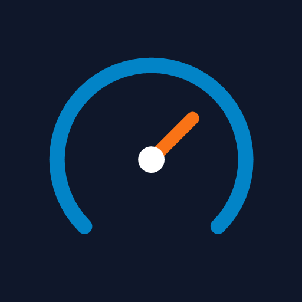
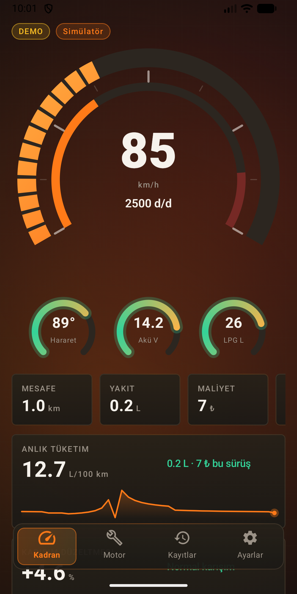
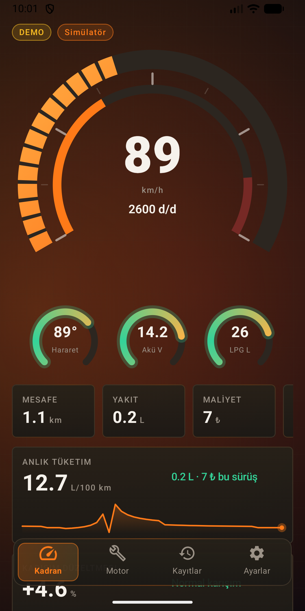
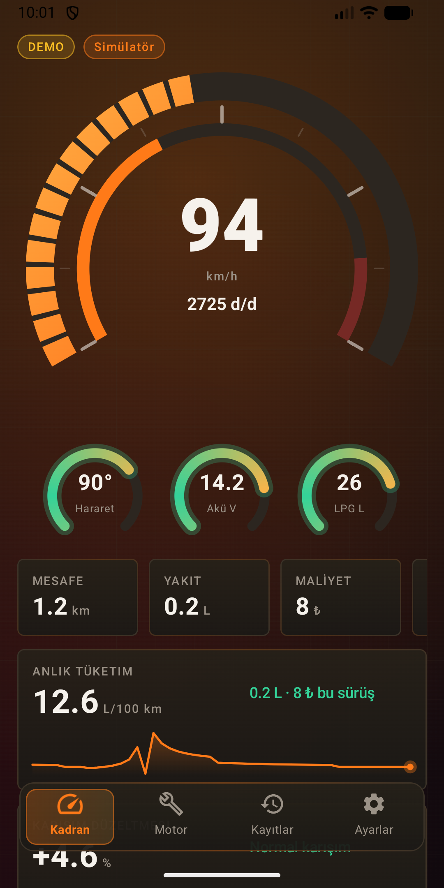

Aracınıza takılan Kadranım yol bilgisayarının verilerini telefonunuzda canlı gösteren eşlik uygulaması. Ford Focus (1998-2004) için geliştirildi.
Android · Google Play'de yakında


Hız, devir, hararet, akü gerilimi ve LPG seviyesi tek ekranda.
Anlık ve ortalama yakıt tüketimi, sürüş maliyeti.
Fakir/zengin karışım düzeltmesini rölanti, seyir ve yükte izleyin.
Kayıtlı arıza kodlarını okuyun ve silin.
Son 30 günün sürüşleri telefonunuzda saklanır, eskiler otomatik silinir.
Uygulama kapalıyken de bağlantı ve sürüş kaydı sürer.
Ayarlar > Deneysel bölümünden açılır, varsayılan olarak kapalıdır. Her araçta çalışmayabilir; araç cevap vermezse uygulama bunu belirtir.
Göstergenin ibre değeri ve şamandıra okuması; kalan yakıt ve menzil tahmini.
Dört teker hızı, ABS arıza kodları ve hız sensörü kontrolü.
Kapı, bagaj, park lambası ve kontak durumu.
Enjektör süresi, hedef rölanti, rölanti valfi, klima kompresörü ve hava basıncı.
Park lambası yanınca yol bilgisayarı ekranı otomatik koyu temaya geçer.
Canlı veri için uygulamanın eşleştiği Kadranım yol bilgisayarı cihazı gerekir. Cihazınız yoksa uygulamadaki Demo (simülatör) modu ile her şeyi deneyebilirsiniz.
Kadranım kişisel veri toplamaz, internet izni yoktur ve reklam içermez. Ayrıntılar için gizlilik politikasını okuyun.